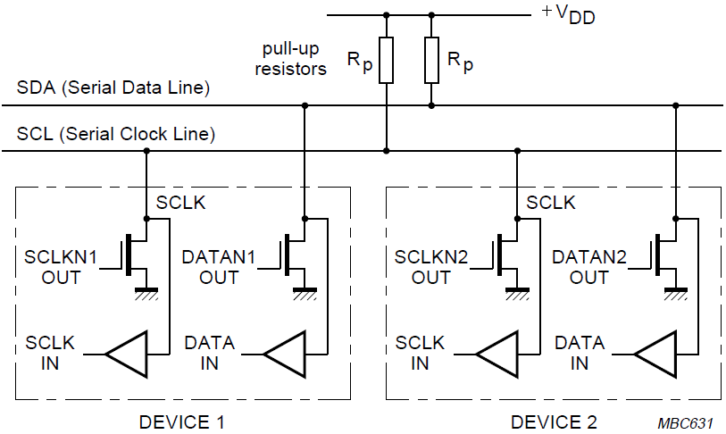
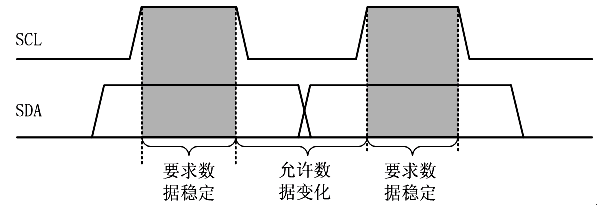
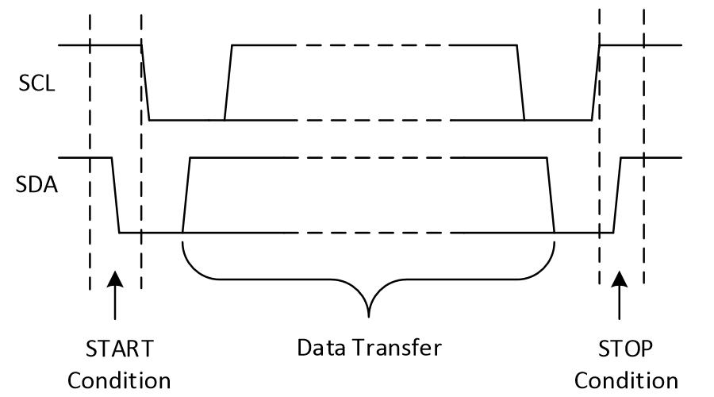
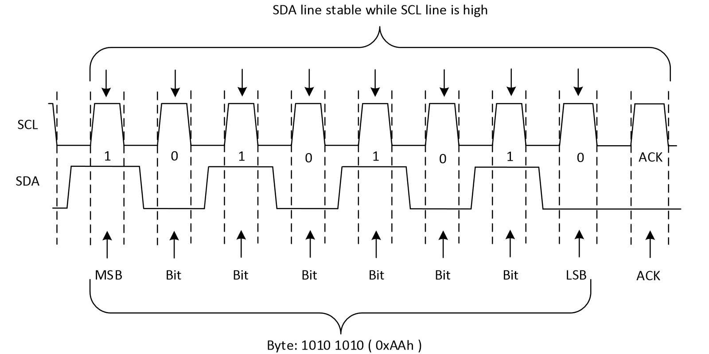
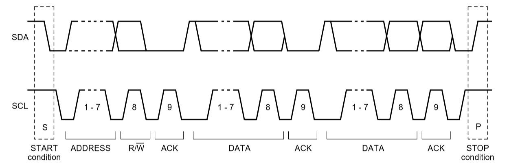
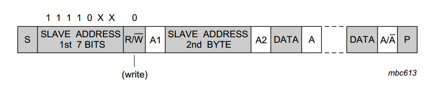
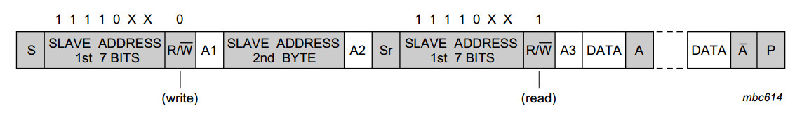

说明
iic作为当今嵌入式应用中最常见的串行通信协议之一我愿将其与UART和SPI并称三幻神，是对于嵌入式开发者是最基本的要求，因为老是会忘记iic协议的一些细节，故作记录。
iic简介
IIC(Inter－Integrated Circuit)总线是一种由NXP（原PHILIPS）公司开发的两线式串行总线，用于连接微控制器及其外围设备。是一种半双工同步的低速通信协议。多用于主控制器和从器件间的主从通信，在小数据量场合使用，传输距离短，任意时刻只能有一个主机等特性。
IC使用两根信号线进行通信：一根时钟线SCL，一根数据线SDA。IIC将SCL处于高时SDA拉低的动作作为开始信号，SCL处于高时SDA拉高的动作作为结束信号；传输数据时，SDA在SCL低电平时改变数据，在SCL高电平时保持数据，每个SCL脉冲的高电平传递1位数据。
主要特性
- IC用2根信号线通信：串行数据线 SDA、串行时钟线 SCL；
- IIC总线上所有器件的SDA、SCL引脚输出驱动都为开漏(OD) 结构，通过外接上拉电阻实现总线上所有节点SDA、SCL信号的线与逻辑关系；
- 总线上的所有设备通过软件寻址且具有唯一的地址（7位或10位）。7位“从机专用地址码”，其高4位为由生产厂家制定的设备类型地址，低3位为器件引脚定义地址（由使用者定义）；10位地址不常见；
- 任何时刻都只存在简单的主从关系，按数据传输的方向，主机可以是主发送器或主接收器；
- 支持多主机。在总线上存在多个主机时，通过冲突检测和仲裁机制防止多个主机同时发起数据传输时存在的冲突；
- IIC总线上所有器件都具有“自动应答”功能，保证数据传输的正确性； 主机和从机的区别在于对SCL的发送权，只有主机才能发送SCL；
- IIC总线允许挂载最多的设备数量取决于总线上最大电容值，一般为400pf（Hs模式100pf）
支持的传输速率：
| 模式 | 速度 |
|---|---|
| 标准模式（Standard Mode） | 100kb/s |
| 快速模式（Fast Mode） | 400kb/s |
| 增强快速模式（Fast Mode Plus） | 1Mb/s |
| 高速模式（High Speed Mode） | 3.4Mb/s |
| 极速模式（Ultra-FastMode） | 5Mb/s |
硬件结构
总线结构
IIC使用两根信号线进行通信，要求两根线都使用 开漏输出接上拉电阻 的配置，以此实现总线上所有节点SDA、SCL信号的线与逻辑关系。
Rp电阻的取值有一定的要求，太小会导致灌入电流过大，使’低’数据不稳定，甚至损坏端口；太大会导致信号上升缓慢，使得数据传输出错。在不同应用场景及供电电压下有不同的取值要求。

仲裁机制
开漏输出
开漏输出回顾：当输入为高电平时，三级管导通，输出为低电平。输入为低电平，输出不确定，在这种情况下，如果使用强上拉，则可以输出高电平。开漏输出是实现”线与“的一种方案。
线与
多个开漏输出连接在一起时，只要有一个输入为低电平，那么总体表现为低电平（处于低电平的那个io口把vdd流向Vout的电流引走了）。

“线与“使得总线上不会出现数据冲突，实现了总线的仲裁控制。总线的控制权会交给最后一个输出低电平的设备，其它设备（输出高）通过检测总线上的电平状态（状态低），对比与自己输出状态不一致，则自动退出对总线的控制请求，从而防止了总线上的数据冲突。
🌟时序逻辑
数据有效性
scl为高电平期间，为数据采集期，所以sda上的数据此时一定要保持稳定哦~

开始与结束信号
有设备想要sda总线控制权时，会主动把sda拉低。平时sda为高。
- 开始信号（START/S）： SCL为高时，SDA从高到低的跳变产生开始信号 。
- 结束信号（STOP/P） ： SCL为高时，SDA从低到高的跳变产生结束信号。
- 重复开始信号（ReSTART/Sr）： 在结束时不给出STOP信号，而以一个时钟周期内再次给出开始信号作为替代。

传输格式（字节格式）
SDA数据线上的每个字节必须是8位，对于每次传输的字节数没有限制。每个字节（8位）数据传送完后紧跟着应答信号（ACK，第9位）。数据的先后顺序为：高位在前 。

ACK信号
协议规定数据传输过程必须包含应答（ACK）。接收器通过应答告知发送的字节已被成功接收，之后发送器可以进行下一个字节的传输。所以主机产生数据传输过程用了9个时钟。发送器在应答时钟周期内释放对SDA总线的控制，这样 接收器 可以通过将SDA线拉低告知发送器：数据已被成功接收。(谁接收，谁发送应答信号)发送端对接收端说：我他妈要给你发数据了，收到货他妈回复一下0
应答信号分为两种：
- 当第9位(应答位)为 低电平 时，为 ACK （Acknowledge） 信号
- 当第9位(应答位)为 高电平 时，为 NACK（Not Acknowledge）信号
主机发送数据，从机接收时，ACK信号由从机发出。当在SCL第9位时钟高电平信号期间，如果SDA仍然保持高电平，则主机可以直接产生STOP条件终止以后的传输或者继续ReSTART开始一个新的传输 此时主机发现事情不对，我他妈辛辛苦苦给你发的货你连句回应都没有，主机可以选择不发了，或者继续用爱发电发发发 大声发！来财，来~我是憋佬仔
从机发送数据，主机读取数据时，ACK信号由主机给出。主机响应ACK表示还需要再接收数据，而当主机接收完想要的数据后，通过发送NACK告诉从机读取数据结束、释放总线。随后主机发送STOP命令，将总线释放，结束读操作。从机这个fw，纯添狗级别的、麦当劳级别的、ATM级别的。主机叫一直叫从机爆金币，从机真就一直爆，榨干从机了就直接把他甩了他妈的
7bit完整传输示意图

没错前7位是地址，发完地址发送读/写命令，然后发送端交出sda控制权，等待接收端的应答信号。如果从机没有给出ACK应答，则说明接收设备可能没有收到数据（如寻址的设备不存在或是设备正在忙碌）或无法解析收到的数据，如果是这样，则由master来决定如何处理（STOP或ReSTART）。
从机发，主机收的情况
主机对向从机读取数据时，方式同发送数据有所不同，要多一次通信过程。
主机需要先向从机发送一次信号，告诉从机”我要读取数据“，然后重开一次通信[1]，等待从机主动返回数据。

10bit传输
随着IIC设备日益增多，7位的从机地址逐渐不能满足使用，于是从机地址从7位扩充到了10位。7位和10位地址的设备可以共存于同一个I2C总线系统互不冲突，展现了良好的兼容性。
10-bit 地址的IIC设备需要 2-Byte 来传输从设备地址信息，所以采用了这样的设计：第一个字节为 11110 + 地址高两位(第10、9bit) + 读写控制位，第二个字节为从设备地址低8位，除此之外与7-bit设备相同。（因为 “1111 0xx” 为 IIC 中特地保留的16个特殊指令地址中的一个，所以7-bit设备不会响应该首字节的呼叫，只有10-bit设备会响应，从而实现良好兼容。好样的，iic👍👍👍为你骄傲）
直接贴图了
写

读

注意第一帧都是write哦。
参考文章
- ⭐⭐⭐基础通信协议之 IIC (I2C) 详细讲解_i2c通信的详细讲解-CSDN博客遵循 CC 4.0 BY-SA 版权协议
- 二十、I2C总线仲裁机制 - 轻轻的吻 - 博客园
- GPIO推挽与开漏输出的“线与“特性 - 知乎
重复启动信号（Repeated Start）是一种特殊的操作，它允许在不释放总线的情况下从写模式切换到读模式。这种方式可以避免总线被其他设备占用，或者防止主设备发送 STOP 信号后，其他设备试图接管总线。 ↩︎